La guía recorre el Sokoban tal como está hoy en el repositorio, con las cuatro partes ya unidas (arte, interfaz, dominio y sonido): qué hace cada clase, cómo se conectan y dónde está cada patrón. Cada patrón trae una lista de chequeo con el archivo y la línea donde mirar, así no hace falta creerle a nadie: abrís el archivo y lo comprobás.
La consigna deja claro por qué esto importa: «El foco de la evaluación es la correcta aplicación de los principios y patrones de diseño presentados en la asignatura (SOLID, GRASP, MVC, GOF)», y además «Cada integrante del equipo deberá realizar una defensa exhaustiva del proyecto (oral y/o escrita), lo que determinará la calificación final del mismo.»
Juego, ObservadorJuego, EstadoJuego). Por eso cada parte se pudo hacer por separado y se enchufó cambiando unas pocas líneas de Main (y sumando cinco símbolos al dibujo del tablero).| Color | Qué marca |
|---|---|
| Flúor y negrita | Texto literal de la consigna del profesor (Prof. Pepe). Es lo más importante. |
| Naranja | Rótulos y conceptos que ordenan el texto. |
| Amarillo | Definiciones. |
| Celeste | Explicación técnica: cómo y por qué funciona. |
| Verde | Lo que está bien hecho, buenas prácticas, ventajas. |
| Rojo | Advertencias, riesgos, cosas a mejorar. |
| Violeta | Ampliación tomada de la bibliografía (GoF), no de lo que hay en el proyecto. |
| Cian | Rótulo de ejercicio resuelto. |
En las listas de chequeo: ✓ se cumple ⚠ a medias / revisar ✗ no se cumple todavía. Las referencias tipo vista/Imagenes.java:29 son archivo y número de línea dentro de src/main/java/sokoban/. En los recuadros de código, los comentarios van en dorado: algunos ya están en el archivo y otros se agregaron para esta guía (los números de línea son los del archivo).
+ público (lo usa cualquiera), - privado (solo la clase), # protegido (la clase y sus hijas), ~ de paquete (sin modificador en Java: solo lo ven las clases del mismo paquete). El ~ aparece en el sonido: por ejemplo establecerEstado de Sonidos.static: pertenece a la clase y no a cada objeto (por ejemplo obtenerInstancia()). Cursiva = abstracto: un método sin código, como todos los de una interfaz.Regla general: la flecha sale de la clase que depende y apunta a la que conoce. Si dudás, preguntate «¿quién tiene el código que menciona a quién?»: la flecha sale de ese archivo.
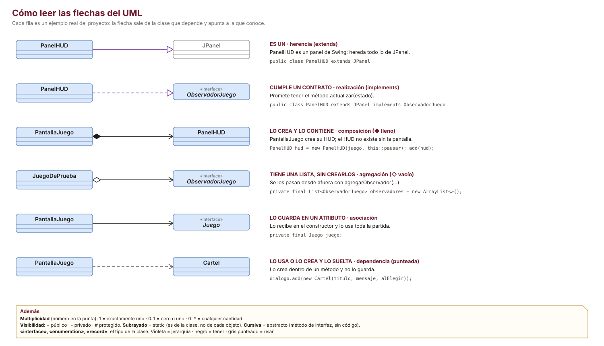
PantallaJuego conoce a Juego, no al revés: la flecha va de PantallaJuego hacia Juego.extends) es línea llena; realización (implements, con una interfaz) es punteada. Las dos terminan en triángulo hueco.EstadoNivel crea sus Caja). Agregación (◇ vacío): el todo tiene a la parte pero se la dieron de afuera (los observadores de JuegoSokoban).MotorMovimiento mueve la Caja pero no la guarda.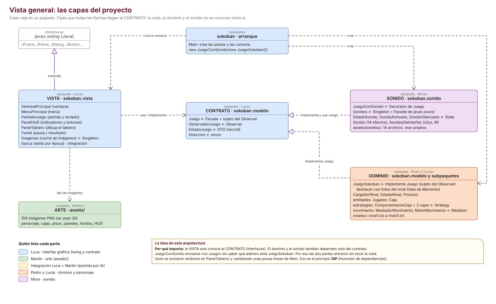
| Paquete o carpeta | Qué contiene | Autor | Estado |
|---|---|---|---|
sokoban | Main: arranca el programa y conecta las piezas. | Luca (+ 4 líneas de Mora) | ✓ listo |
sokoban.vista | Todo lo que se ve: ventana, menú, partida, HUD, tablero, carteles, imágenes. | Luca (+ Epoca en la integración y 5 símbolos nuevos del dominio) | ✓ listo |
sokoban.modelo (contrato) | El contrato entre la vista y el dominio: 2 interfaces, 1 record y 1 enum. | Luca | ✓ listo |
sokoban.modelo (dominio) y .entidades, .estrategias, .movimiento | Las reglas: carga de niveles, tablero, jugador, cajas normal / frágil / llave, hielo, cerrojo y muros, deshacer y puntaje. | Pedro y Lucía | ✓ integrado |
sokoban.sonido | Efectos de sonido del juego y de la interfaz, y la tecla M para silenciar. | Mora | ✓ integrado ⚠ falta aprobar el pull request |
sokoban.prueba | JuegoDePrueba: el Sokoban mínimo que se usó para probar la vista. | Luca | Se borró al unificar: ya lo reemplaza JuegoSokoban |
assets/ | 104 imágenes: personaje, cajas, pisos, paredes, fondos, HUD. | Martín | ✓ listo (30 en uso) |
assets/sonidos/ | 14 efectos .wav generados por código (docs/generar_sonidos.py). | Mora | ✓ listo |
niveles/ | 3 niveles en .txt, un carácter por celda. | Pedro y Lucía | ⚠ son de prueba, muy chicos |
sokoban.modelo ni de sokoban.sonido importa algo de sokoban.vista, y ni la vista ni el dominio importan algo de sokoban.sonido. Si algún día aparece un import sokoban.vista… en el dominio, se rompió la arquitectura. Comprobalo buscando «import sokoban.vista» e «import sokoban.sonido» en esos paquetes: hoy no aparece ninguno. La única clase que conoce a todos es Main, y está bien que así sea.public static void main(String[] args) {
SwingUtilities.invokeLater(() -> { // todo Swing corre en un solo hilo (EDT)
Juego juego = new JuegoConSonido(new JuegoSokoban()); // el sonido envuelve al dominio
new VentanaPrincipal(juego).setVisible(true);
SonidosDeInterfaz.instalar(); // arranque, clics y tecla M
});
}
Main es el único lugar que nombra las clases concretas: crea el dominio (JuegoSokoban), lo envuelve con el sonido (JuegoConSonido) y le pasa el resultado a la ventana como un Juego (la interfaz). La ventana no sabe que adentro hay sonido ni qué clase es el dominio. SonidosDeInterfaz.instalar() suma el sonido de arranque, el clic de los botones y la tecla M sin tocar ninguna pantalla.
PantallaJuego pide juego.iniciarNivel(n). Pasa primero por JuegoConSonido, que le pasa el pedido al dominio y después hace sonar el inicio de nivel.JuegoSokoban.iniciarNivel controla que el número esté entre 1 y 3 y le pide el nivel a CargadorNivel (modelo/JuegoSokoban.java:26).CargadorNivel.cargar(n) busca /niveles/nivelN.txt adentro del .jar; si no está, lo lee de la carpeta niveles/ del proyecto (modelo/CargadorNivel.java:13 y :18).new EstadoNivel(lineas) recorre el archivo carácter por carácter: guarda el terreno, crea el Jugador y crea cada Caja con su estrategia (modelo/EstadoNivel.java:34 a :52).IllegalArgumentException).JuegoSokoban conecta el motor de movimiento al jugador (conectarMotor), pone los contadores en cero, vacía el historial y avisa a los observadores.| Símbolo | En el archivo .txt | Símbolo | Solo lo arma el dominio para la vista |
|---|---|---|---|
# . | pared, piso, destino | f | caja frágil dañada (le queda 1 de resistencia) |
~ | piso resbaladizo (hielo) | G g | caja frágil sobre un destino (intacta / dañada) |
C X O | cerrojo, muro cerrado, muro abierto | K | caja llave sobre un destino |
@ + | jugador (sobre piso / sobre destino) | c | cerrojo abierto |
$ * F L | caja normal (sobre piso / sobre destino), caja frágil, caja llave | Los arma EstadoNivel.tableroParaVista() (:122). |
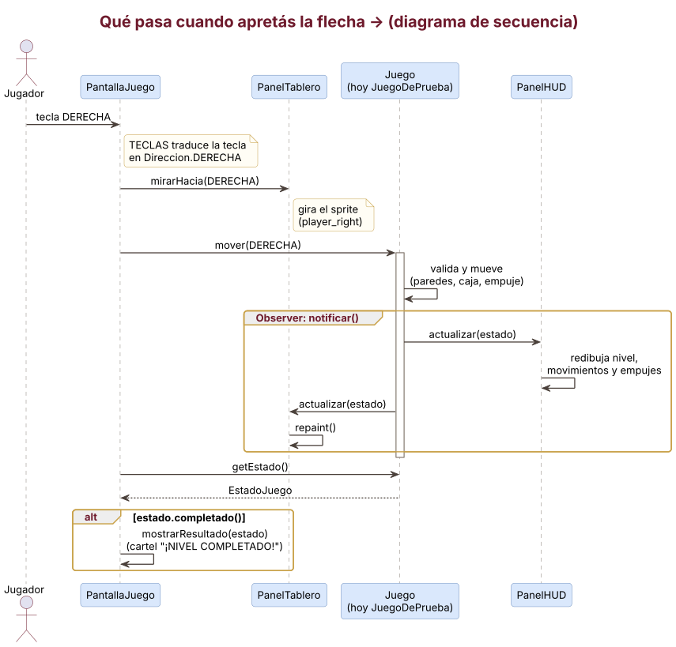
PantallaJuego recibe la tecla, la traduce con el mapa TECLAS en Direccion.DERECHA y gira el sprite del jugador (vista/PantallaJuego.java:56 y :72).mover(DERECHA). Quien atiende primero es JuegoConSonido: anota el estado de antes y le pasa el pedido a JuegoSokoban.JuegoSokoban saca una foto del nivel (para deshacer) y le pide al Jugador que se mueva.Jugador no sabe de paredes ni cajas: le pasa el pedido a su mediador, MotorMovimiento, que revisa la celda siguiente, empuja la caja (y la deja deslizar si cae en hielo) y mueve al jugador.Caja con despuesDeEmpujar, y la caja le pasa el aviso a su estrategia: la normal no hace nada, la frágil pierde resistencia y la llave abre los muros si quedó sobre un cerrojo.JuegoSokoban guarda la foto en el historial, suma un movimiento (y un empuje si lo hubo) y llama a notificar().notificar() manda el nuevo EstadoJuego al HUD y al tablero, y cada uno se redibuja solo.JuegoConSonido, compara el estado de antes con el de después y hace sonar el efecto que corresponde (acá, empuje) con el Singleton Sonidos.PantallaJuego pide getEstado(); si completado() es verdadero, muestra el cartel de resultado (vista/PantallaJuego.java:75).Fijate que en ningún paso la vista toca el tablero del dominio: solo pide y recibe una foto (EstadoJuego).
«El criterio utilizado para calcular dicho puntaje debe ser definido por el equipo de desarrollo.» El equipo eligió esta fórmula (modelo/JuegoSokoban.java:80):
int puntaje = Math.max(0, 1000 - 10 * movimientos - 5 * empujes - 50 * undosUsados);
sokoban.vista (Luca)| Clase | Qué hace | Relaciones clave | Mirá esto para validarla |
|---|---|---|---|
| VentanaPrincipal extiende JFrame | La ventana. Tiene el menú y la partida, y cambia entre ellos con un CardLayout. | ◆ MenuPrincipal, ◆ PantallaJuego | Las pantallas no se conocen entre sí: se avisan con callbacks (this::jugar, this::mostrarMenu). |
| MenuPrincipal extiende JPanel | Menú con un botón por nivel y Salir, sobre el fondo de 1985. | ◆ Cartel, usa Imagenes | Recibe IntConsumer y Runnable: no sabe quién lo contiene (bajo acoplamiento). |
| PantallaJuego extiende JPanel | La partida: HUD arriba, tablero al centro. Traduce teclas en movimientos y muestra pausa y resultado. | → Juego, ◆ PanelHUD, ◆ PanelTablero, crea Cartel | Es la clase con más tareas (armar, teclado, carteles). Ver SRP en la sección 16. |
| PanelHUD extiende JPanel | Indicadores de nivel, movimientos y empujes, y botones Deshacer, Reiniciar y Pausa. | implementa ObservadorJuego, usa Juego e Imagenes | Los botones no toman el foco, así las flechas siempre mueven al jugador (vista/PanelHUD.java:82). |
| PanelTablero extiende JPanel | Dibuja el tablero celda por celda con las imágenes de la época, y el personaje mirando hacia donde se movió. | implementa ObservadorJuego, → Epoca, → Direccion, usa Imagenes | Los símbolos están en el mapa CAPAS: los 5 símbolos nuevos del dominio entraron como 5 líneas, sin switch (:35). |
| Cartel extiende JPanel | Recuadro reutilizable con título, mensaje y botones. | lo usan el menú, la pausa y el resultado | Evita código duplicado: los tres carteles son la misma clase. |
| Imagenes «Singleton» | Caché de imágenes: cada PNG se lee del disco o del .jar una sola vez. | la usan Menu, HUD y Tablero; lee assets/ | Ver sección 9 (Singleton). |
| Epoca enum · integración | Fondo, piso y pared de cada época (1955, 1985, 2015). Los niveles las van rotando. | la usa PanelTablero | Una época nueva es una constante más (OCP). Math.floorMod evita índices negativos. |
sokoban.modelo (Luca)| Clase | Qué hace | Relaciones clave | Mirá esto para validarla |
|---|---|---|---|
| Juego interface | Todo lo que la vista le puede pedir al dominio: iniciar nivel, mover, deshacer, reiniciar, pedir el estado y registrar observadores. | Facade, sujeto del Observer y componente del Decorator | El comentario de modelo/Juego.java:10 fija la regla: después de cada cambio hay que avisar a los observadores. |
| ObservadorJuego interface | Un solo método: actualizar(EstadoJuego). | la implementan PanelHUD y PanelTablero | Un método solo: cumple ISP. |
| EstadoJuego record (DTO) | La foto del nivel: nivel, movimientos, empujes, deshacer usados, puntaje, si ganó y el tablero como líneas de texto. | lo devuelve Juego y lo recibe cada observador | Es inmutable: record + List.copyOf (modelo/EstadoJuego.java:16). |
| Direccion enum | ARRIBA, ABAJO, IZQUIERDA, DERECHA; cada una sabe cuánto se mueve en filas y columnas. | la usan la vista, Juego, Jugador, Posicion y el mediador | Evita «primitive obsession» (no se usan números o textos sueltos) y es Experto en información (GRASP). |
sokoban.modelo y subpaquetes (Pedro y Lucía)| Clase | Qué hace | Relaciones clave | Mirá esto para validarla |
|---|---|---|---|
| JuegoSokoban | Implementa Juego: recibe los pedidos de la vista, guarda el historial para deshacer, cuenta movimientos, empujes y deshacer, calcula el puntaje y avisa a los observadores. | implementa Juego, ◆ CargadorNivel, → EstadoNivel, → MotorMovimiento, ◇ ObservadorJuego, ◆ Foto | Es el Controlador de GRASP y la fachada concreta. Las constantes 3, 15, 5 y 3 tienen nombre (:10 a :13). |
| Foto record privado | Una copia del nivel más los contadores de movimientos y empujes. | la guarda JuegoSokoban en el historial | Ver sección 12 (deshacer). |
| CargadorNivel | Lee nivelN.txt del .jar o de la carpeta niveles/. | crea EstadoNivel | Separa «leer el archivo» de «entender el nivel». |
| EstadoNivel | El tablero vivo: terreno, jugador y cajas. Sabe si una celda está libre, si es hielo o cerrojo, abre los muros, saca cajas rotas, sabe si se ganó, arma el texto para la vista y se copia a sí mismo. | ◆ Jugador, ◆ Caja (0..*) | Valida el archivo y explica el error. Es la clase más larga del dominio (158 líneas). |
| Posicion record | Fila y columna; siguiente(direccion) da la celda de al lado. | la usan Jugador, Caja y el motor | Inmutable y comparable con equals (por ser record). |
| Jugador entidades | Tiene una posición y un mediador; para moverse le pide permiso al mediador. | → MediadorMovimiento | Ver sección 11 (Mediator). |
| Caja entidades | Tiene posición, resistencia y una estrategia que decide qué pasa después de cada empuje y con qué símbolo se dibuja. | → ComportamientoCaja | Ver sección 10 (Strategy). |
| ComportamientoCaja y las 3 …Strategy estrategias | Normal (no hace nada más), Frágil (pierde 1 de resistencia por empuje y a los 3 se rompe) y Llave (sobre un cerrojo abre los muros). | las usa Caja | Ver sección 10. |
| MediadorMovimiento y MotorMovimiento movimiento | Las reglas de movimiento: paredes, cajas, segunda caja, deslizamiento en hielo y si hubo empuje. | Motor implementa Mediador, → EstadoNivel | Ver sección 11. |
sokoban.sonido (Mora)| Clase | Qué hace | Relaciones clave | Mirá esto para validarla |
|---|---|---|---|
| JuegoConSonido | Envuelve a otro Juego: le pasa cada pedido y, comparando el estado de antes y de después, hace sonar el efecto que corresponde. | implementa Juego, → Juego (el envuelto), usa Sonidos y Sonido | Ver sección 13 (Decorator). |
| Sonidos «Singleton» | Carga los 14 .wav una sola vez y los reproduce. Esconde javax.sound. Si la PC no tiene audio, el juego sigue en silencio. | → EstadoSonido, usa Sonido | Ver secciones 9 (Singleton) y 14 (State). |
| EstadoSonido, SonidoActivado, SonidoSilenciado de paquete | Los dos estados del sonido. Cada uno sabe qué hacer al reproducir y a cuál pasa con la tecla M. | los usa Sonidos | Ver sección 14. |
| Sonido enum | Los 14 efectos, cada uno con su archivo en assets/sonidos/. | lo usan todas las del paquete | Nada de rutas escritas a mano en otras clases. |
| SonidosDeInterfaz | Escucha clics y teclas en toda la aplicación: suena el arranque, el clic de cualquier botón y alterna el sonido con M. | usa Sonidos | No hizo falta tocar ninguna pantalla ni botón. |
| Clase | Qué hace | Relaciones clave | Mirá esto para validarla |
|---|---|---|---|
| Main | Crea el dominio, lo envuelve con el sonido, crea la ventana e instala los sonidos de la interfaz. Es la «raíz de composición»: el único lugar que conoce las clases concretas. | crea JuegoSokoban, JuegoConSonido y VentanaPrincipal; usa SonidosDeInterfaz | Usa SwingUtilities.invokeLater, como pide Swing. |
| JuegoDePrueba sin uso | El Sokoban mínimo que permitió probar la vista antes de que llegara el dominio. | nadie lo crea | Se borró al unificar todo en main. Por eso no aparece en los diagramas. |
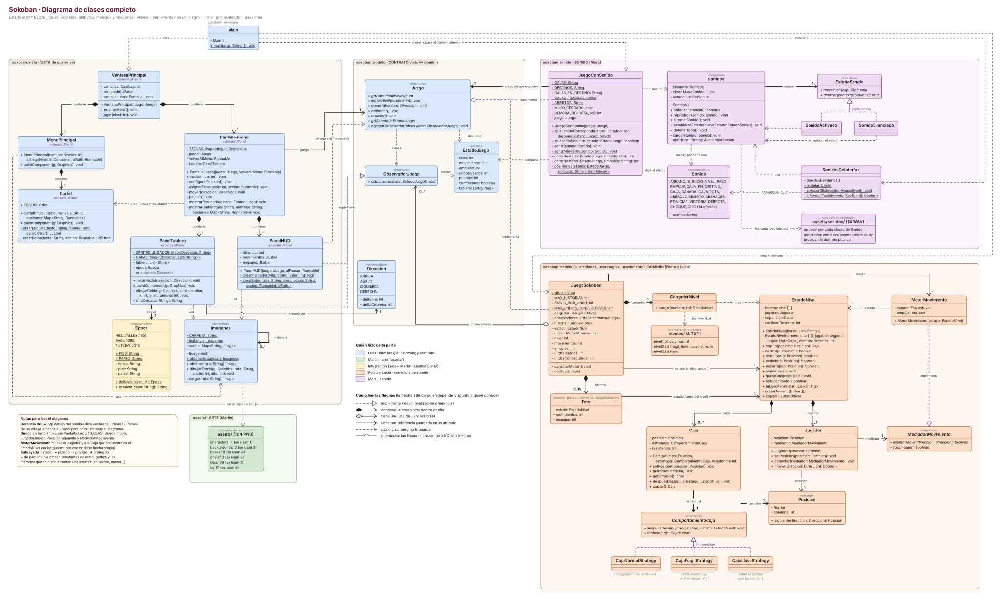
PanelHUD y PanelTablero, el dominio dependería de la vista (y de Swing). Con Observer el dominio solo conoce la interfaz ObservadorJuego.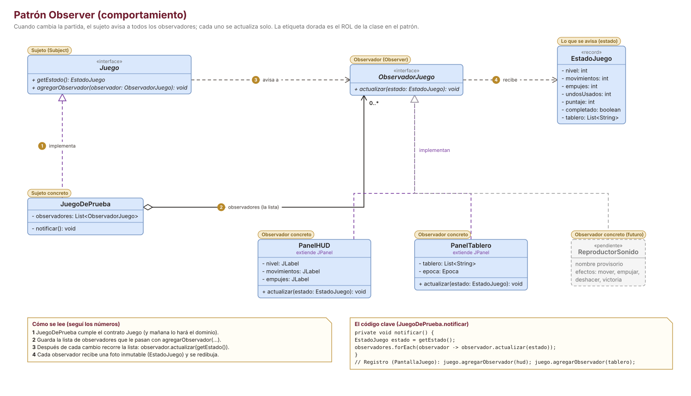
| Rol en el patrón (GoF) | Clase del proyecto | Dónde |
|---|---|---|
| Subject (sujeto) | Juego (agregarObservador) | modelo/Juego.java:27 |
| ConcreteSubject | JuegoSokoban | modelo/JuegoSokoban.java:86 y :91 |
| Observer | ObservadorJuego | modelo/ObservadorJuego.java:7 |
| ConcreteObserver | PanelHUD, PanelTablero | vista/PanelHUD.java:26, vista/PanelTablero.java:25 |
| Estado que viaja | EstadoJuego (modelo «push») | modelo/EstadoJuego.java:12 |
@Override
public void agregarObservador(ObservadorJuego observador) {
observadores.add(observador); // guarda la INTERFAZ, no PanelHUD
if (estado != null) observador.actualizar(getEstado()); // lo pone al día
}
private void notificar() {
EstadoJuego foto = getEstado(); // una sola foto para todos
for (ObservadorJuego obs : observadores) obs.actualizar(foto);
}
| # | Pregunta | Dónde mirar | Estado |
|---|---|---|---|
| 1 | ¿Hay una interfaz de observador con un método de aviso? | ObservadorJuego.actualizar | ✓ |
| 2 | ¿El sujeto permite registrar observadores? | Juego.agregarObservador | ✓ |
| 3 | ¿El sujeto guarda una lista del tipo interfaz (no de clases concretas)? | List<ObservadorJuego> en JuegoSokoban.java:16 | ✓ |
| 4 | ¿Avisa después de cada cambio? | notificar() al final de iniciarNivel, mover y deshacer (reiniciar llama a iniciarNivel) | ✓ |
| 5 | ¿El sujeto ignora quiénes son los observadores? | JuegoSokoban no importa nada de sokoban.vista | ✓ |
| 6 | ¿Se puede sumar un observador sin modificar el sujeto? | Alcanza con implementar ObservadorJuego y registrarlo | ✓ |
| 7 | ¿Se puede dar de baja un observador? | No existe quitarObservador | ⚠ |
| 8 | ¿Está garantizado que cualquier implementación de Juego va a notificar? | Solo lo dice un comentario en Juego.java | ⚠ |
Bien aplicado: están los cuatro roles, el sujeto depende solo de la interfaz y sumar un observador no obliga a tocar nada. Para defenderlo, conviene saber estos matices:
JuegoConSonido.agregarObservador le pasa cada observador a JuegoSokoban, que es quien los guarda y les avisa.detach (dar de baja). Acá no hace falta porque el HUD y el tablero viven toda la ejecución.Juego tiene que acordarse de llamar a notificar(). Una mejora posible es una clase abstracta (por ejemplo JuegoObservable) que ya traiga la lista y notificar().JuegoSokoban no avisa (no cambió nada). Es correcto: un observador solo se entera de cambios.PantallaJuego no es observador: después de mover consulta getEstado() para ver si ganó. Es válido (consulta directa), porque hoy un nivel solo se completa dentro de un mover (también cuando la caja desliza en el hielo).juego.mover(Direccion.DERECHA).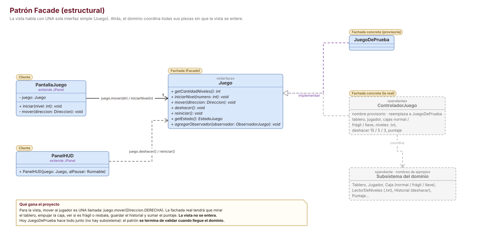
| Rol en el patrón (GoF) | Clase del proyecto | Dónde |
|---|---|---|
| Client | PantallaJuego, PanelHUD, VentanaPrincipal | usan solo métodos de Juego |
| Facade | Juego (interfaz) + JuegoSokoban (la implementa) | modelo/Juego.java:13, modelo/JuegoSokoban.java:9 |
| Subsystem classes | CargadorNivel, EstadoNivel, MotorMovimiento, Jugador, Caja y las estrategias | modelo/ y sus subpaquetes |
| # | Pregunta | Dónde mirar | Estado |
|---|---|---|---|
| 1 | ¿Hay un punto de entrada único y con pocas operaciones? | Juego: 7 métodos | ✓ |
| 2 | ¿Los clientes usan solo la fachada? | La vista no importa nada del dominio | ✓ |
| 3 | ¿Hay detrás un subsistema de varias clases? | 11 clases e interfaces del dominio | ✓ |
| 4 | ¿La fachada delega en el subsistema en vez de resolver todo? | JuegoSokoban.mover le pide el movimiento al Jugador (:45), la carga al cargador (:29) | ✓ |
| 5 | ¿La interfaz tiene una sola responsabilidad? | agregarObservador mezcla «fachada» y «sujeto» | ⚠ |
JuegoSokoban coordina y además se queda con tres tareas propias: el historial de deshacer, los contadores y el puntaje. Son pocas líneas y tiene sentido que estén ahí (es quien sabe cuándo pasó un movimiento).Sonidos esconde javax.sound (AudioSystem, Clip, formatos, excepciones) detrás de reproducir(Sonido.PASO).Juego podría dividirse en Juego (acciones) y JuegoObservable (registrar observadores). Con 7 métodos no es grave, pero es bueno saberlo.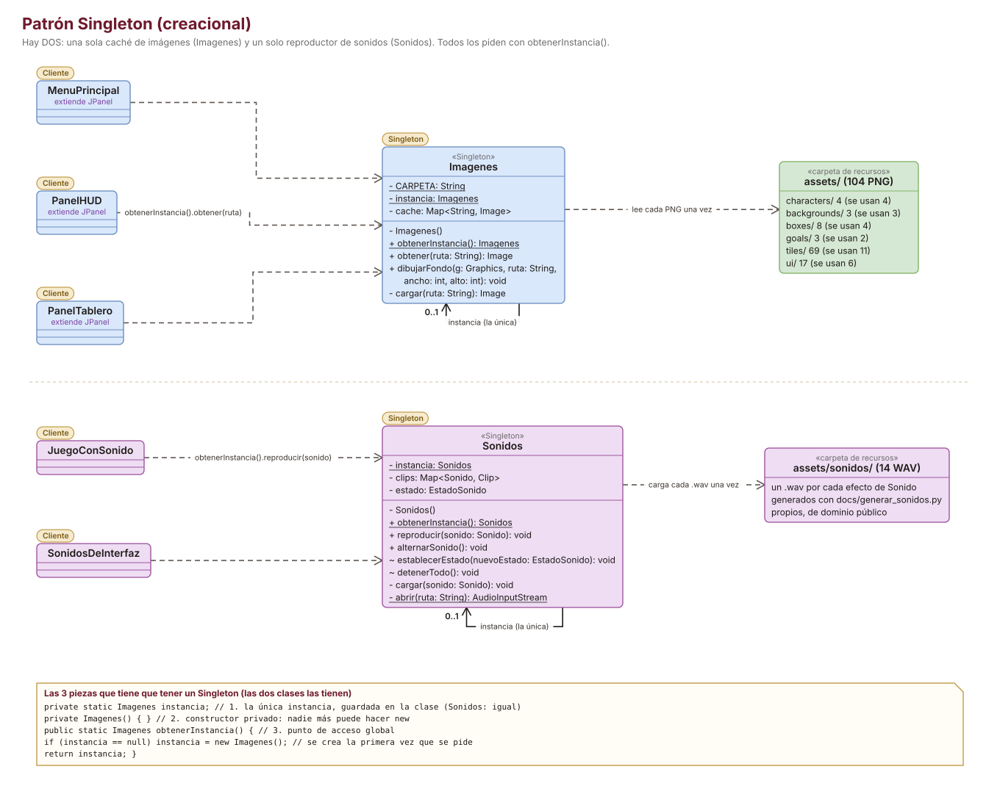
public final class Sonidos { // final: nadie puede heredarla
private static Sonidos instancia; // 1. la única instancia
private final Map<Sonido, Clip> clips = new EnumMap<>(Sonido.class);
private EstadoSonido estado = new SonidoActivado();
En la línea 38 está el constructor privado (2), que carga los 14 efectos. Y el acceso global (3):
public static Sonidos obtenerInstancia() { // 3. acceso global
if (instancia == null) { // se crea la primera vez (lazy)
instancia = new Sonidos();
}
return instancia;
}
| # | Pregunta | Imagenes | Sonidos | Estado |
|---|---|---|---|---|
| 1 | ¿El constructor es privado? | vista/Imagenes.java:26 | sonido/Sonidos.java:38 | ✓ |
| 2 | ¿Hay un atributo static con la única instancia? | :22 | :33 | ✓ |
| 3 | ¿Hay un método static de acceso que la crea si no existe? | :29 | :49 | ✓ |
| 4 | ¿La clase es final? | :18 | :31 | ✓ |
| 5 | ¿Realmente hace falta una sola instancia? | caché compartida | los Clip se cargan una vez y el estado (silencio) es uno solo | ✓ |
| 6 | ¿Es seguro con varios hilos? | No está sincronizado, pero las dos se usan solo desde el hilo de Swing | ⚠ ver abajo | |
Sonidos además combina Singleton con Facade (esconde javax.sound) y es el contexto del State (sección 14).javax.swing.Timer que usa el sonido de derrota corren ahí. Hoy no hay riesgo.Sonidos no rompe el juego si la PC no tiene audio: atrapa el error, avisa por consola y sigue en silencio (sonido/Sonidos.java:43).Main y pasarla por constructor. Para una caché y un reproductor, el Singleton es defendible.Imagenes y Sonidos son «Fabricación pura»: no representan nada del juego, existen para resolver un tema técnico.Caja o MotorMovimiento tendrían un if (tipo == FRAGIL) … else if (tipo == LLAVE) … que crece con cada caja nueva.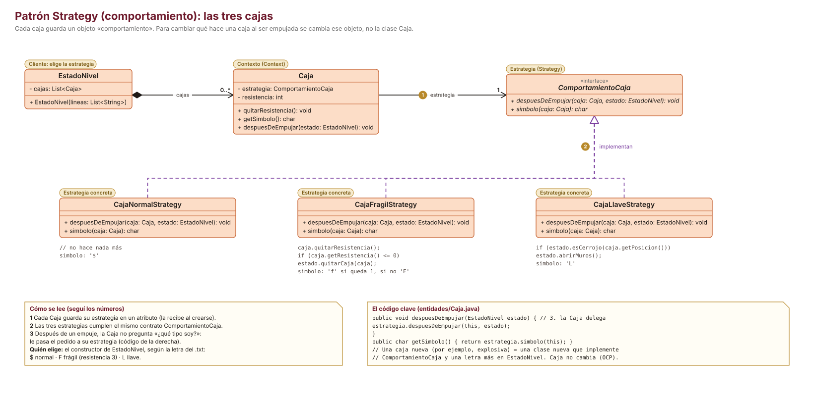
| Rol en el patrón (GoF) | Clase del proyecto | Dónde |
|---|---|---|
| Context | Caja (guarda la estrategia y le delega) | modelo/entidades/Caja.java:9 y :24 |
| Strategy | ComportamientoCaja | modelo/estrategias/ComportamientoCaja.java:6 |
| ConcreteStrategy | CajaNormalStrategy, CajaFragilStrategy, CajaLlaveStrategy | modelo/estrategias/ |
| Quién elige la estrategia | el constructor de EstadoNivel, según la letra del .txt ($, F, L) | modelo/EstadoNivel.java:40 a :51 |
@Override
public void despuesDeEmpujar(Caja caja, EstadoNivel estado) {
caja.quitarResistencia(); // arranca en 3 (EstadoNivel)
if (caja.getResistencia() <= 0) {
estado.quitarCaja(caja); // se rompe y desaparece del tablero
}
}
| # | Pregunta | Dónde mirar | Estado |
|---|---|---|---|
| 1 | ¿Hay una interfaz común para los comportamientos? | ComportamientoCaja: despuesDeEmpujar y simbolo | ✓ |
| 2 | ¿El contexto guarda la estrategia en un atributo del tipo interfaz? | Caja.java:9: ComportamientoCaja estrategia | ✓ |
| 3 | ¿El contexto delega en vez de preguntar «qué tipo soy»? | Caja.java:22 y :24; no hay instanceof ni switch por tipo | ✓ |
| 4 | ¿Las estrategias no guardan datos propios? | La resistencia vive en la Caja, por eso Caja.copiar() puede compartir la estrategia (:29) | ✓ |
| 5 | ¿Una caja nueva no obliga a tocar Caja ni MotorMovimiento? | Una clase nueva + una letra más en EstadoNivel | ✓ |
| 6 | ¿Se puede cambiar la estrategia mientras se juega? | Es final y no hay setter | ⚠ no hace falta |
Caja no sabe qué tipo de caja es.EstadoNivel, que elige según la letra del archivo. Si crecieran los tipos, ese switch podría pasar a una pequeña fábrica (Factory Method).F o f según la resistencia, y EstadoNivel la cambia a G o g si está sobre un destino.X del nivel (EstadoNivel.abrirMuros); la consigna habla de «los muros correspondientes». Con un solo cerrojo por nivel da lo mismo; si un nivel tuviera dos cerrojos, habría que decidir qué muro abre cada uno.Jugador empujara directamente a la Caja y cada uno revisara el tablero, las reglas quedarían repartidas. Con el mediador, todas las reglas de movimiento están en MotorMovimiento.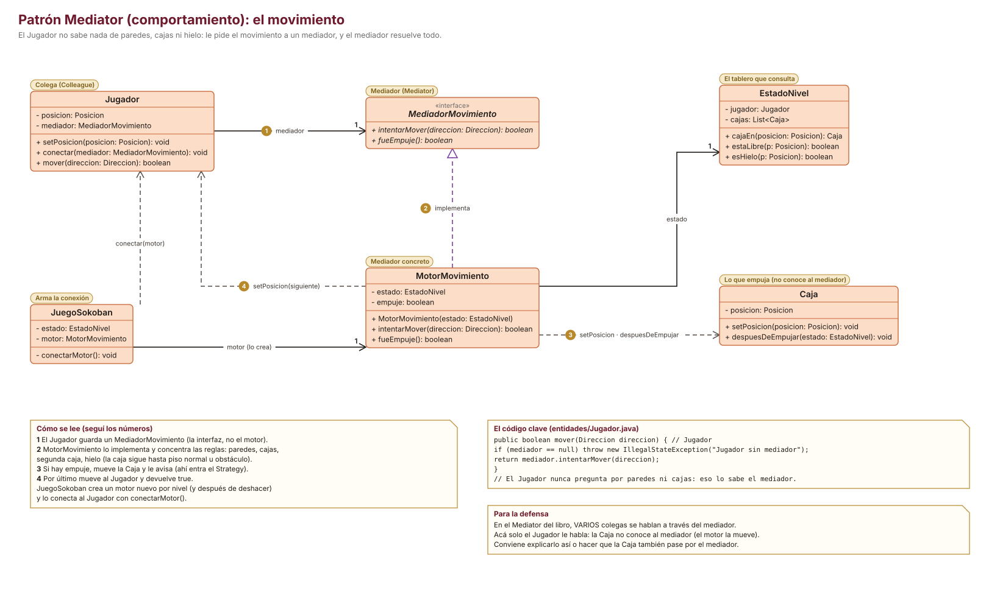
| Rol en el patrón (GoF) | Clase del proyecto | Dónde |
|---|---|---|
| Mediator | MediadorMovimiento | modelo/movimiento/MediadorMovimiento.java:6 |
| ConcreteMediator | MotorMovimiento | modelo/movimiento/MotorMovimiento.java:10 |
| Colleague | Jugador (le habla al mediador) | modelo/entidades/Jugador.java:9 y :22 |
| Otro participante | Caja (la mueve el mediador, pero ella no lo conoce) | MotorMovimiento.java:38 y :39 |
Posicion destinoCaja = siguiente.siguiente(direccion);
if (!estado.estaLibre(destinoCaja)) return false; // Ni pared ni segunda caja.
// Si entra al hielo, sigue hasta el primer piso normal o un obstaculo.
while (estado.esHielo(destinoCaja)
&& estado.estaLibre(destinoCaja.siguiente(direccion))) {
destinoCaja = destinoCaja.siguiente(direccion);
}
caja.setPosicion(destinoCaja);
caja.despuesDeEmpujar(estado); // STRATEGY: fragil o llave aplican su efecto.
jugador.setPosicion(siguiente);
| # | Pregunta | Dónde mirar | Estado |
|---|---|---|---|
| 1 | ¿Hay una interfaz de mediador? | MediadorMovimiento: intentarMover, fueEmpuje | ✓ |
| 2 | ¿El colega conoce solo la interfaz, no el mediador concreto? | Jugador.java:9 | ✓ |
| 3 | ¿Las reglas están concentradas en el mediador? | MotorMovimiento.java:17 a :43 | ✓ |
| 4 | ¿Los participantes no se conocen entre sí? | Jugador no menciona a Caja ni al revés | ✓ |
| 5 | ¿Todos los colegas hablan a través del mediador? | Solo el Jugador; la Caja no lo conoce | ⚠ |
| 6 | ¿Está claro quién crea y conecta el mediador? | JuegoSokoban.conectarMotor() (:36), al iniciar y al deshacer | ✓ |
Jugador nuevo (lo crea EstadoNivel.copiar()) que todavía no tiene mediador. Si no se conectara, el Jugador avisa con IllegalStateException("Jugador sin mediador").JuegoSokoban guarda el motor como MotorMovimiento (la clase), aunque solo usa fueEmpuje(), que ya está en la interfaz. Podría declararse como MediadorMovimiento.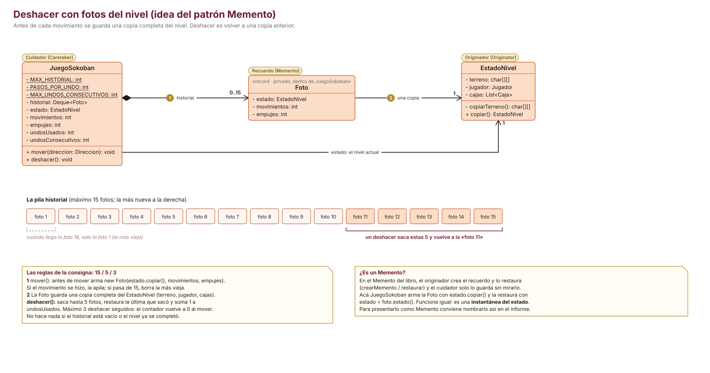
| Rol en el patrón (GoF) | Clase del proyecto | Dónde |
|---|---|---|
| Originator | EstadoNivel (sabe copiarse) | modelo/EstadoNivel.java:152 |
| Memento | Foto (copia del nivel + movimientos + empujes) | modelo/JuegoSokoban.java:96 |
| Caretaker | JuegoSokoban (la pila historial) | modelo/JuegoSokoban.java:17 |
public void deshacer() {
if (estado == null || estado.estaCompleto() || historial.isEmpty()
|| undosConsecutivos >= MAX_UNDOS_CONSECUTIVOS) return; // máximo 3 seguidos
Foto foto = null;
for (int i = 0; i < PASOS_POR_UNDO && !historial.isEmpty(); i++) {
foto = historial.pop(); // saca hasta 5 fotos
}
estado = foto.estado(); // vuelve a la última que sacó
movimientos = foto.movimientos();
empujes = foto.empujes();
undosUsados++;
undosConsecutivos++;
conectarMotor();
notificar();
}
| # | Pregunta | Dónde mirar | Estado |
|---|---|---|---|
| 1 | ¿Se guarda una foto antes de cada movimiento, y solo si el movimiento se hizo? | JuegoSokoban.java:44 a :47 | ✓ |
| 2 | ¿Se guardan como máximo 15? | :48 borra la más vieja | ✓ |
| 3 | ¿Cada deshacer vuelve 5 movimientos? | :60 a :63 (si hay menos, vuelve hasta donde puede) | ✓ |
| 4 | ¿Máximo 3 seguidos, y se reinicia al mover? | :57, :58 y :51 | ✓ |
| 5 | ¿La foto es una copia de verdad y no el mismo objeto? | EstadoNivel.copiar() copia terreno, jugador y cada caja | ✓ |
| 6 | ¿Se cuenta cuántas veces se usó, para el resumen? | undosUsados (:66) va a EstadoJuego y al puntaje | ✓ |
| 7 | ¿Está presentado como Memento? | El código no lo nombra así | ⚠ |
crearMemento / restaurar), y el cuidador lo guarda sin mirarlo. Acá JuegoSokoban arma la Foto con estado.copiar() y la restaura reemplazando estado. Es la misma idea (una instantánea del estado): para presentarlo como patrón, conviene nombrarlo así en el informe.JuegoSokoban mezclaría reglas con audio. JuegoConSonido se pone «adelante» del dominio, deja pasar cada pedido y agrega el sonido.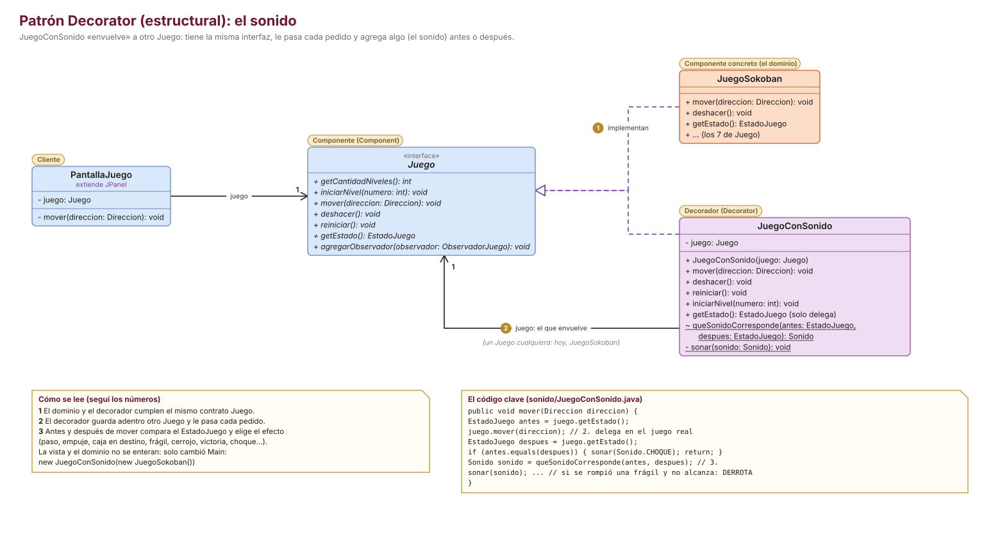
| Rol en el patrón (GoF) | Clase del proyecto | Dónde |
|---|---|---|
| Component | Juego | modelo/Juego.java:13 |
| ConcreteComponent | JuegoSokoban | modelo/JuegoSokoban.java:9 |
| Decorator | JuegoConSonido (no hay decorador abstracto: con uno solo no hace falta) | sonido/JuegoConSonido.java:27 y :38 |
| Client | la vista, que recibe un Juego | Main.java:19 |
@Override
public void mover(Direccion direccion) {
EstadoJuego antes = juego.getEstado();
juego.mover(direccion); // delega en el juego real
EstadoJuego despues = juego.getEstado();
if (antes.equals(despues)) {
sonar(Sonido.CHOQUE); // pared, caja trabada: no se pudo mover
return;
}
Sonido sonido = queSonidoCorresponde(antes, despues);
sonar(sonido);
if (sonido == Sonido.CAJA_ROTA && quedoSinSolucion(despues)) {
sonarMasTarde(Sonido.DERROTA);
}
}
| # | Pregunta | Dónde mirar | Estado |
|---|---|---|---|
| 1 | ¿El decorador implementa la misma interfaz que el componente? | JuegoConSonido.java:27 | ✓ |
| 2 | ¿Guarda el componente envuelto con el tipo interfaz? | :38: private final Juego juego | ✓ |
| 3 | ¿Lo recibe desde afuera (constructor)? | :40 | ✓ |
| 4 | ¿Delega todos los métodos? | los que suenan (:47 a :79) y los que solo delegan (:84 a :96) | ✓ |
| 5 | ¿El componente no sabe que está decorado? | JuegoSokoban no importa nada de sokoban.sonido | ✓ |
| 6 | ¿Se puede poner o sacar sin tocar a los clientes? | Solo cambia Main.java:19 | ✓ |
| 7 | ¿Depende de detalles del componente? | Lee los símbolos del tablero (:30 a :35) | ⚠ |
Main pone o saca todo el sonido.JuegoConSonido.new JuegoConSonido(new OtroDecorador(new JuegoSokoban())).Sonidos tendría un boolean silenciado y un if en cada método. Con State, cada estado sabe qué hacer y a cuál pasa.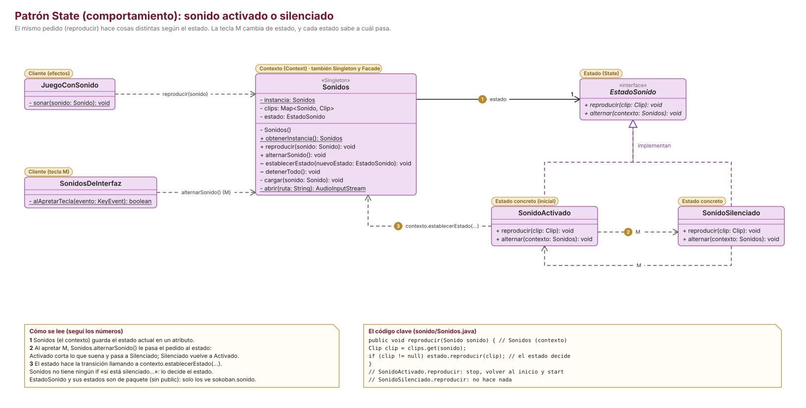
| Rol en el patrón (GoF) | Clase del proyecto | Dónde |
|---|---|---|
| Context | Sonidos (guarda el estado actual) | sonido/Sonidos.java:36 |
| State | EstadoSonido (de paquete) | sonido/EstadoSonido.java:17 |
| ConcreteState | SonidoActivado (el inicial), SonidoSilenciado | sonido/SonidoActivado.java:10, sonido/SonidoSilenciado.java:10 |
| Quién dispara el cambio | SonidosDeInterfaz (tecla M) | sonido/SonidosDeInterfaz.java:46 |
@Override
public void reproducir(Clip clip) {
clip.stop();
clip.setFramePosition(0);
clip.start();
}
/** Al silenciar, corta lo que esté sonando y pasa a Silenciado. */
@Override
public void alternar(Sonidos contexto) {
contexto.detenerTodo();
contexto.establecerEstado(new SonidoSilenciado()); // la decide el estado
}
| # | Pregunta | Dónde mirar | Estado |
|---|---|---|---|
| 1 | ¿Hay una interfaz de estado con las operaciones que cambian? | EstadoSonido: reproducir, alternar | ✓ |
| 2 | ¿El contexto guarda el estado actual en un atributo del tipo interfaz? | Sonidos.java:36 | ✓ |
| 3 | ¿El contexto delega en el estado en vez de usar «if»? | reproducir (:57) y alternarSonido (:65) | ✓ |
| 4 | ¿Las transiciones están adentro de los estados? | SonidoActivado.java:22, SonidoSilenciado.java:20 | ✓ |
| 5 | ¿Solo los estados pueden cambiar el estado? | establecerEstado es de paquete (:70) | ✓ |
new SonidoSilenciado()). Como los estados no guardan datos, se podrían reutilizar dos instancias fijas; con una tecla que se aprieta de vez en cuando no importa.EstadoJuegoEstadoJuego: la vista recibe una foto del nivel y nunca un EstadoNivel o una Caja del dominio.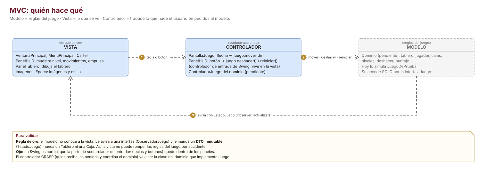
| # | Pregunta | Dónde mirar | Estado |
|---|---|---|---|
| 1 | ¿El modelo no conoce a la vista? | Sin imports de sokoban.vista en modelo ni en sonido | ✓ |
| 2 | ¿La vista recibe datos inmutables? | record + List.copyOf | ✓ |
| 3 | ¿La vista modifica el modelo solo a través de operaciones? | Solo llama métodos de Juego | ✓ |
| 4 | ¿Está claro quién es el controlador? | Dos niveles: ver abajo | ✓ |
| 5 | ¿El formato del tablero alcanza para todo lo que hay que dibujar? | Un carácter por celda | ⚠ |
PantallaJuego traduce las flechas y PanelHUD los botones.JuegoSokoban. Si te preguntan «¿dónde está el controlador?», explicá los dos niveles.f, G, g, K, c). Todavía quedan casos sin símbolo: la caja llave sobre el cerrojo tapa el dibujo del cerrojo, y el jugador o una caja sobre hielo tapan el hielo.| Principio | Dónde se ve | Dónde está flojo | Estado |
|---|---|---|---|
| SRP · una sola responsabilidad | Leer el archivo (CargadorNivel), guardar el tablero (EstadoNivel), mover (MotorMovimiento), reaccionar al empuje (estrategias), sonar (Sonidos): cada cosa en su clase. | PantallaJuego arma la partida, maneja el teclado y muestra los carteles. JuegoSokoban junta historial, contadores y puntaje (son pocas líneas). | ⚠ |
| OCP · abierto a extensión, cerrado a modificación | Caja nueva = estrategia nueva; sonido = decorador nuevo; nuevo observador, símbolo (CAPAS) o época (Epoca) sin tocar la lógica existente. | Una caja nueva igual suma una letra en el switch de EstadoNivel. | ✓ |
| LSP · sustitución de Liskov | JuegoSokoban y JuegoConSonido son intercambiables detrás de Juego: la vista funciona igual con cualquiera. | Las tres estrategias también son intercambiables para Caja. | ✓ |
| ISP · interfaces chicas | ObservadorJuego tiene un método; MediadorMovimiento, ComportamientoCaja y EstadoSonido, dos. | Juego mezcla acciones con el registro de observadores. | ✓ |
| DIP · depender de abstracciones | La vista depende de Juego; el Jugador de MediadorMovimiento; la Caja de ComportamientoCaja; el sonido de Juego. Solo Main conoce las clases concretas. | JuegoSokoban guarda el motor como MotorMovimiento y no como la interfaz. | ✓ |
| Patrón GRASP | Dónde se ve en el proyecto | Estado |
|---|---|---|
| Experto en información | EstadoNivel sabe si una celda está libre y si se ganó; Direccion sabe cuánto se mueve; Epoca sabe qué piso y pared le tocan. | ✓ |
| Creador | EstadoNivel crea el Jugador y las Cajas que contiene; CargadorNivel crea el EstadoNivel; PantallaJuego crea el HUD y el tablero. | ✓ |
| Controlador | JuegoSokoban recibe los pedidos del sistema (iniciar, mover, deshacer, reiniciar) y coordina. | ✓ |
| Bajo acoplamiento | Vista, dominio y sonido no se conocen; las pantallas se avisan con Runnable / IntConsumer. | ✓ |
| Alta cohesión | Clases cortas con una sola tarea: la más larga en uso es JuegoConSonido (169 líneas, con comentarios). | ✓ |
| Polimorfismo | Las cajas (Strategy), los estados del sonido (State) y los observadores se usan sin preguntar de qué clase son. | ✓ |
| Fabricación pura | Imagenes, Sonidos, CargadorNivel y MotorMovimiento: no son parte del «mundo» del juego, resuelven un tema técnico o concentran reglas. | ✓ |
| Indirección / Variaciones protegidas | Juego se interpone entre vista y dominio; MediadorMovimiento entre el jugador y las reglas. | ✓ |
✓ niveles .txt ✓ caja normal, frágil y llave ✓ piso resbaladizo ✓ cerrojo y muros ✓ deshacer 15 / 5 / 3 ✓ victoria y paso al nivel siguiente ✓ resumen con movimientos, empujes, deshacer y puntaje ✓ HUD ✓ sonidos propios de dominio público ✓ imágenes ✓ README
| Tema | Qué hay que hacer | Prioridad |
|---|---|---|
| Dos funcionalidades extra | «Cada equipo debe, necesariamente, incorporar dos funcionalidades adicionales al juego que impliquen la aplicación de patrones de diseño.» El silencio con la tecla M (State) puede contar como una. Falta la otra. | alta |
| StarUML | «Diagrama de clases en StarUML» Estos diagramas sirven para revisar y como guía, pero la entrega pide StarUML. | alta |
| Informe técnico | «Informe técnico con las decisiones de diseño y su justificación» Las secciones 7 a 16 de esta guía sirven de base. | alta |
| Video | «Video gameplay que muestre todas las funcionalidades implementadas» | media |
| Mail al docente | Lo manda un solo integrante, con copia al resto, con el nombre del equipo y el apellido y nombre de cada uno. | media |
| Licencias y uso de IA | Anotar el origen y la licencia de cada imagen y sonido, y declarar el uso de IA en el informe. | media |
Son observaciones de la revisión del código integrado. Ninguna es grave; la idea es que todos sepan dónde están y decidan juntos.
Juego, EstadoJuego, ObservadorJuego, Direccion y Main. Ya se recuperaron. Para la próxima, conviene traer los cambios con git (rama y pull request) y no copiando archivos.JuegoDePrueba ya no se usaba. Se borró el paquete sokoban.prueba al unificar todo en main.docs/dominio.md, ya sin las instrucciones de copiado.main. Ahora main tiene todo junto: arte, interfaz, épocas, dominio y sonido.EJERCICIO RESUELTO Consigna: comparar dos formas de sumar el sonido sin tocar el dominio: (a) una clase que implemente ObservadorJuego, o (b) el JuegoConSonido que hay hoy.
Resolución:
notificar(), y eso pasa únicamente si algo cambió (modelo/JuegoSokoban.java:45: si el movimiento no se pudo, sale antes de notificar). Entonces nunca sabría que el jugador chocó contra una pared, ni que apretó deshacer sin que pasara nada.Main. El decorador tiene más información, por eso se eligió.Juego juego = new JuegoSokoban(); juego.agregarObservador(new ReproductorSonido()); // (a) se entera solo de los cambios // Lo que hay hoy (b), Main.java:19: Juego juego = new JuegoConSonido(new JuegoSokoban()); // ve cada pedido, también los que fallan
| Pregunta | Respuesta |
|---|---|
| ¿Por qué el dominio y el sonido entraron sin tocar la vista? | Porque la vista depende de la interfaz Juego y no de una clase concreta (DIP). Solo cambió Main (y se sumaron 5 símbolos en CAPAS). |
| ¿Qué pasa, en orden, cuando apretás una flecha? | PantallaJuego → JuegoConSonido → JuegoSokoban (foto) → Jugador → MotorMovimiento → Caja y su estrategia → notificar a HUD y tablero → sonido. |
| En el Strategy, ¿quién es el contexto y quién elige la estrategia? | Contexto: Caja. La elige el constructor de EstadoNivel según la letra del .txt. |
| ¿Qué hace la caja frágil y dónde está ese código? | Pierde 1 de resistencia por empuje; con 3 empujes se rompe y desaparece. CajaFragilStrategy.despuesDeEmpujar. |
| ¿Qué ventaja da el Mediator y cuál es su punto débil acá? | Las reglas de movimiento están en un solo lugar y el Jugador no conoce cajas ni paredes. Punto débil: solo el Jugador le habla al mediador. |
| ¿Cómo funciona el deshacer y cómo cumple 15 / 5 / 3? | Pila de fotos (máximo 15); cada uso saca 5 y vuelve a la última; un contador corta en 3 seguidos y vuelve a 0 al mover. |
| ¿Cómo se calcula el puntaje? | max(0, 1000 - 10·movimientos - 5·empujes - 50·deshacer). |
¿Por qué JuegoConSonido es un Decorator? | Implementa Juego, guarda otro Juego adentro, le delega todo y agrega el sonido. |
¿Qué cambia entre SonidoActivado y SonidoSilenciado? | Qué hacen al reproducir (sonar o nada) y a cuál pasan con M. Sonidos no tiene ningún «if». |
| ¿Cuáles son las tres piezas de un Singleton y en qué clases están? | Atributo static con la instancia, constructor privado y método static de acceso: en Imagenes y en Sonidos. |
¿Por qué EstadoJuego es un record con List.copyOf? | Para que sea inmutable: ningún observador puede modificar lo que reciben los demás. |
| ¿Dónde está el controlador del MVC? | La entrada (teclas y botones) está en PantallaJuego y PanelHUD; el controlador GRASP es JuegoSokoban. |
Repasala en varias sesiones separadas (por ejemplo a los 1, 3, 7 y 14 días) en vez de todo junto la noche anterior.
python3 docs/uml/fuentes/diagramas.py (las clases están en clases.py y la ubicación de cada caja y flecha en diagramas.py). Genera los SVG y los PNG.docs/uml/fuentes/7-secuencia-mover.puml (PlantUML).node docs/guia/generar-pdf.js a partir de docs/guia/guia.html.clases.py con el color de su autor y se ubica en el diagrama completo.Esta guía y los diagramas se hicieron con asistencia de IA a partir del código del repositorio, y conviene declararlo en el informe técnico. El equipo es responsable de revisarlos y entenderlos.